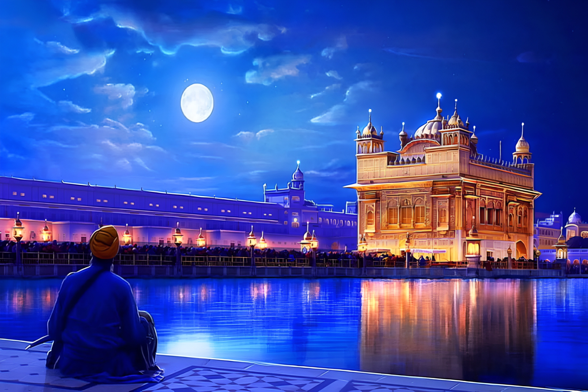
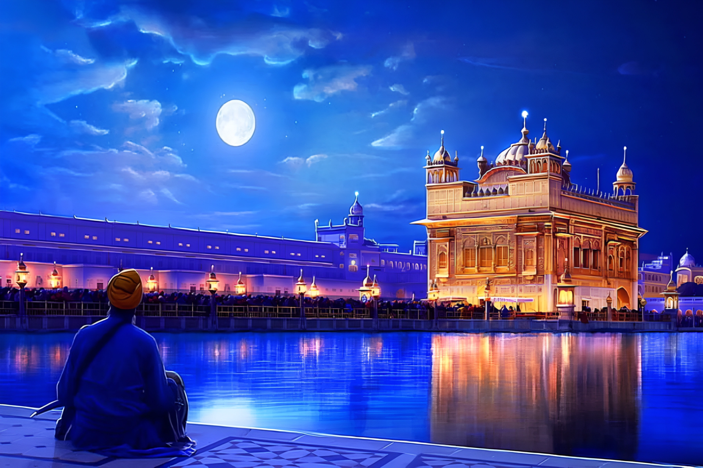

I
ndia, officially the Republic of India, is a country in South Asia. It is the seventh-largest country by area, the second-most populous country, and the most populous democracy in the world. Bounded by the Indian Ocean on the South, the Arabian Sea on the South-West, and the Bay of Bengal on the South-East, it shares land borders with Pakistan to the West; China, Nepal, and Bhutan to the North; and Bangladesh and Myanmar to the East. In the Indian Ocean, India is in the vicinity of Sri Lanka and the Maldives; its Andaman and Nicobar Islands share a maritime border with Thailand, Myanmar and Indonesia.
- CULTURE OF INDIA : Indian culture is the heritage of social norms, ethical values, traditional customs, belief systems, political systems, artifacts and technologies that originated in or are associated with the ethno-linguistically diverse India. Indian culture, often labelled as a combination of several cultures, has been influenced by a history that is several millennia old, beginning with the Indus Valley civilization and other early cultural areas. Many elements of Indian culture, such as Indian religions, mathematics, philosophy, cuisine, languages, dance, music and movies have had a profound impact across the Indosphere, Greater India and the world. Specifically Southeast Asian and Himalayan influence on early India, had lasting impacts on the formation of Hinduism and Indian mythology. Hinduism itself formed from various distinct folk religions, which merged during the Vedic period and following periods. Especially Austroasiatic groups, such as early Munda and Mon Khmer, but also Tibetic and other Tibeto-Burmese groups, left noteworthy influence on local Indian peoples and culture. Several scholars, such as Professor Przyluski, among others, concluded that there is a significant cultural, linguistic, and political Mon-Khmer (Austroasiatic) influence on early India, which can also be observed by Austroasiatic loanwords within Indo-Aryan languages and rice cultivation, which was introduced by East/Southeast Asian rice-agriculturalists using a route from Southeast Asia through Northeast India into the Indian subcontinent. The British Raj further influenced Indian culture, such as through the widespread introduction of the English language, and a local dialect developed.
- INDUS VALLEY CIVILIZATION : The Indus Valley Civilisation (IVC), also known as the Indus civilisation, was a Bronze Age civilisation in the northwestern regions of South Asia, lasting from 3300 BCE to 1300 BCE, and in its mature form from 2600 BCE to 1900 BCE. Together with ancient Egypt and Mesopotamia, it was one of three early civilisations of the Near East and South Asia, and of the three, the most widespread. Its sites spanned an area from modern day northeast Afghanistan and much of modern day Pakistan to western and northwestern India. The civilisation flourished both in the alluvial plain of the Indus River, which flows through the length of Pakistan, and along a system of perennial monsoon-fed rivers that once coursed in the vicinity of the Ghaggar-Hakra, a seasonal river in northwest India and eastern Pakistan.
 The Indus civilisation is also known as the Harappan civilisation, after its type site Harappa, the first to be excavated early in the 20th century in what was then the Punjab province of British India and is now Punjab, Pakistan. The discovery of Harappa and soon afterwards Mohenjo-daro was the culmination of work that had begun after the founding of the Archaeological Survey of India in the British Raj in 1861. There were earlier and later cultures called Early Harappan and Late Harappan in the same area. The early Harappan cultures were populated from Neolithic cultures, the earliest and best-known of which is Mehrgarh, in Balochistan, Pakistan. Harappan civilisation is sometimes called Mature Harappan to distinguish it from the earlier cultures.
The Indus civilisation is also known as the Harappan civilisation, after its type site Harappa, the first to be excavated early in the 20th century in what was then the Punjab province of British India and is now Punjab, Pakistan. The discovery of Harappa and soon afterwards Mohenjo-daro was the culmination of work that had begun after the founding of the Archaeological Survey of India in the British Raj in 1861. There were earlier and later cultures called Early Harappan and Late Harappan in the same area. The early Harappan cultures were populated from Neolithic cultures, the earliest and best-known of which is Mehrgarh, in Balochistan, Pakistan. Harappan civilisation is sometimes called Mature Harappan to distinguish it from the earlier cultures.
- WOMEN EMPOWERMENT : Women empowerment in India is the most effective tool for development as these days; women across the world are actively working as a leader and surpassing others in all the spheres of life. As the entire world is clasping its breath and praying every single day for an incredible escape from the COVID-19 Pandemic, it is the women governors and nations steered by these amazing figures who are taking over the responsibility and marching ahead in the battle alone wherever required. Women empowerment in India is dependent up to a great extent on numerous different variables that encompass geographical setting (urban/rural), social status (caste and class), educational status, and age factor. Actions on the women empowerment exist at the state, local (panchayat), and national levels. However, women encounter differentiation in most sectors like education, economic opportunities, health and medical assistance, and political participation, which demonstrates that there are substantial gaps between strategy advancements and real exercise at the community level.
- INDIA AS A FEDERAL UNION : India is a federal union comprising 28 states and 8 union territories. All states, as well as the union territories of Jammu and Kashmir, Puducherry and the National Capital Territory of Delhi, have elected legislatures and governments following the Westminster system of governance. The remaining five union territories are directly ruled by the central government through appointed administrators. In 1956, under the States Reorganisation Act, states were reorganised on a linguistic basis. There are over a quarter of a million local government bodies at city, town, block, district and village levels.
 
